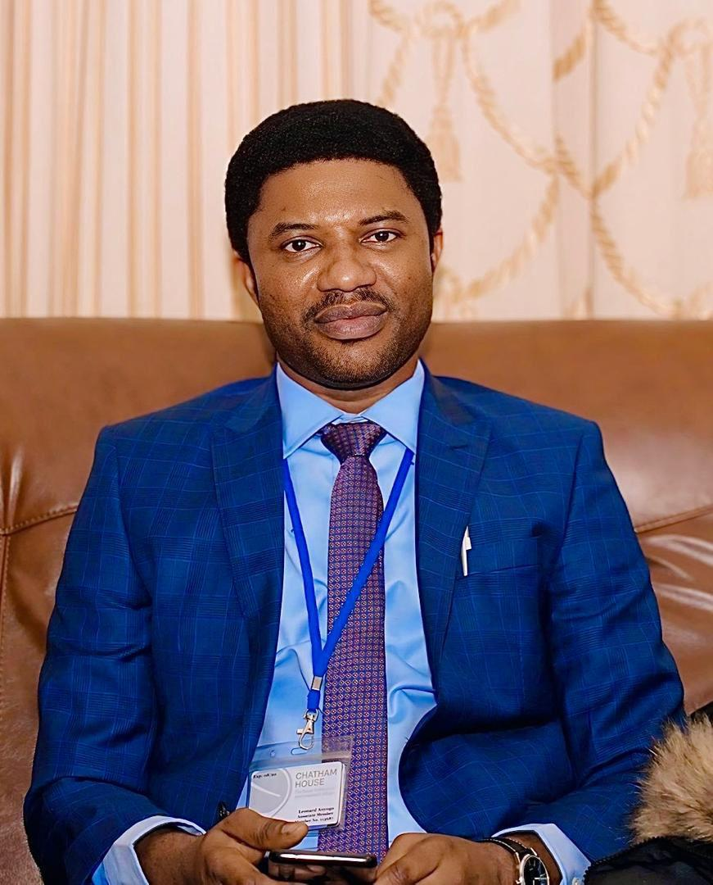

DG GGAI cautions against leaving state police funds in the hands of Governors
July 29, 2026
"State police fund must not be left in the hands of governors"
Director General of Good Governance Advocacy International, Barr. Leonard Anyogo, has backed the current effort for the creation of state policing, stressing that funding must be direct to the institutions and not through state governors. Barr. Anyogo, a renowed lawyer and member of the Chatham House London, while speaking in an interview said several checks must be put in place to avoid abuse of the institutions. He noted that the constitution must ensure that funding for state policing must be statutory and not be left to the wimps and caprices of state governors. Stressing the need for legislative and judicial oversights, Anyogo warned State governors from using state police for pushing political agenda or harassing opponents. Calling for community-based policing, the public affairs expert said Nigeria must begin to deploy police officers and police bosses who are indigenous to the states and understand the terrain.

Online Publications
Read more on this in the following publications: